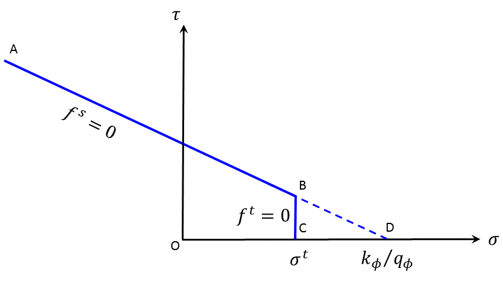
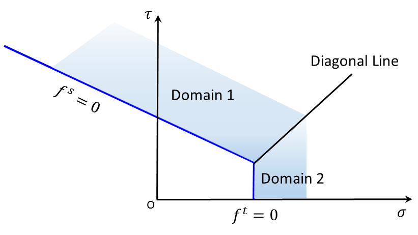
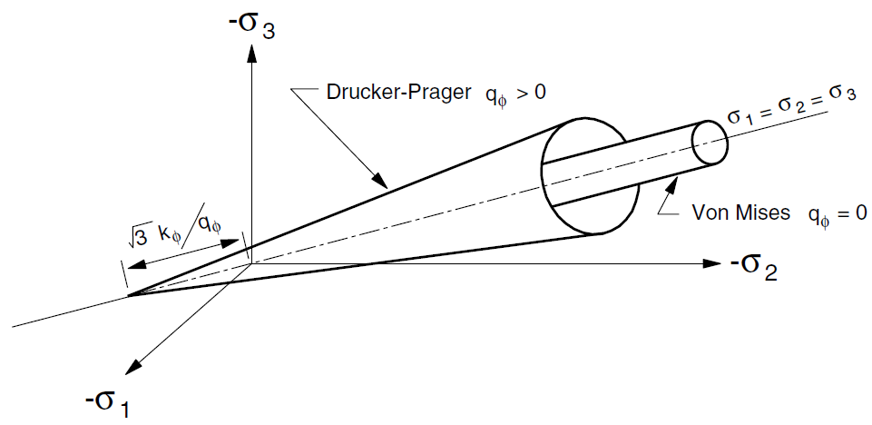
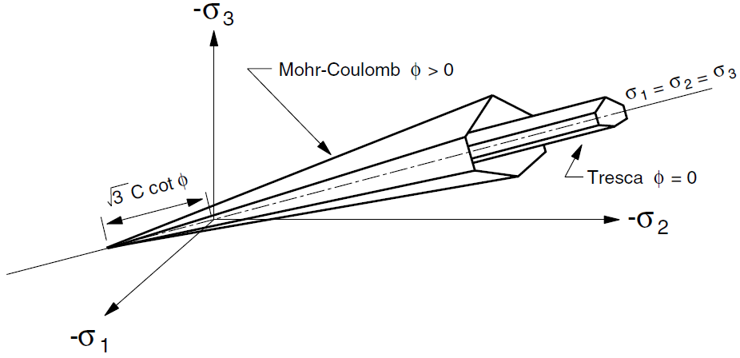

Drucker-Prager 模型
该模型的破坏包络涉及带拉伸截断的 Drucker-Prager 准则。应力点在此包络上的位置由剪切破坏的非关联流动法则与拉伸破坏的关联法则控制。
公式
Drucker-Prager 模型定义中所涉及的广义应力向量 \([\underline \sigma]\) 有两个分量（\(n\) = 2）：切向应力 \(\tau\) 与平均法向应力 \(\sigma\)，定义为
其中适用爱因斯坦求和约定，\([s]\) 为偏应力张量。关联广义应变增量向量 \(\Delta [\underline\epsilon]\) 的分量为剪应变增量 \(\Delta \gamma\) 与体积应变增量 \(\Delta \epsilon\)，定义为
其中 \(\Delta [e]\) 为偏应变增量张量。
增量弹性定律
以广义应力与应力增量表示的虎克定律增量表达式形式为
其中 \(K\) 与 \(G\) 分别为体积模量与剪切模量。
为便于日后参照，把 增量公式（Incremental Formula） 中关于 \(S_i\) 的这些表达式作比较：
复合破坏准则与流动法则
该模型所用破坏准则为带拉伸截断的复合 Drucker-Prager 准则，如 图 1（Figure 1） 的 \((\tau, \sigma)\) 表示所示。破坏包络 \(f(\tau, \sigma)\) = 0 在图中从点 \(A\) 到 \(B\) 由 Drucker-Prager 破坏准则 \(f^s\) = 0 定义，其中
以及从 \(B\) 到 \(C\) 由拉伸破坏准则 \(f^t\) = 0 定义，其中
其中 \(q_{\phi}\)、\(k_{\phi}\) 与 \({\sigma}^t\) 为正的材料常数，\({\sigma}^t\) 为 Drucker-Prager 模型的抗拉强度。注意对性质 \(q_{\phi}\) 不为零的材料，抗拉强度的最大值为


图 1：FLAC3D Drucker-Prager 破坏准则。
势函数 \(g(\tau, \sigma) = constant\) 由两个函数 \(g^s\) 与 \(g^t\) 组成，分别用于描述剪切与拉伸塑性流动。函数 \(g^s\) 一般对应非关联法则，其形式为
其中 \(q_{\psi}\) 为常数，若流动法则为关联则等于 \(q_{\phi}\)。函数 \(g^t\) 对应关联流动法则，由下式给出


图 2：Drucker-Prager 模型——流动法则定义中所用分区。
通过以下方法给流动法则以唯一定义。在 \((\tau, \sigma)\) 平面中，\(f^s\) = 0 与 \(f^t\) = 0 的表示之间的对角线（见 图 2（Figure 2））把违反复合屈服函数的弹性试探域分为两部分：域 1（剪切破坏）与域 2（拉伸破坏）（见 图 2（Figure 2））。若应力点落在域 1 内，则判定为剪切破坏，并用由势函数 \(g^s\) 导出的流动法则把应力点置于曲线 \(f^s\) = 0 上。若该点落在域 2 内，则发生拉伸破坏，新的应力点用由 \(g^t\) 导出的流动法则满足 \(f^t\) = 0。
塑性修正
首先考虑剪切破坏，对公式 (12) 求偏导得
把 \(\partial g^s / \partial \tau\) 与 \(\partial g^s / \partial \sigma\) 分别替换公式 (7) 与公式 (8) 中的 \(\Delta {\gamma}^e\) 与 \(\Delta {\epsilon}^e\)，可得
利用 \(f = f^s\)（见公式 (9)）则变为
以及
新的应力张量分量可用重缩放技术以广义应力表示。形式上可把公式 (18) 写为
其中 \(\mu\) 为已知比例因子（\(\mu = 1 - {\lambda}^s G / {\tau}^I\)）。随后由 \(\tau\) 用张量分量 \(s_{ij}\) 的定义公式 (1) 可得
由最后两式消去 \(\mu\)，得
最后，可用公式 (19) 与公式 (24) 按以下定义计算新应力分量
现在考虑拉伸破坏。对公式 (13) 求偏导得
利用公式 (7) 可得
其中 \(f = f^t\) 由公式 (10) 给出：
以及
在该破坏模式中 \({s_{ij}}^N = {s_{ij}}^I\)，由偏应力定义与公式 (33) 可写出
由此可得
顶点应力修正
在 \(q_{\phi}\) 不为零的极端情形（通常在剪切塑性修正之后），可能出现 \(\sigma\) 大于顶点应力（\(q_k/q_{\phi}\)）的情况。一旦如此，应力将被强制到顶点，即 \(\sigma = q_k/q_{\phi}\) 与 \(\tau=0\)。
实现步骤
在 FLAC3D 中 Drucker-Prager 模型的实现里，先由旧应力分量加上把虎克定律应用于总应变增量 \(\Delta {\epsilon}_{ij}\) 所得的增量，计算弹性试探 \({\sigma}_{ij}^I\)（见 弹性模型（Elastic Model））。偏应力 \(s_{ij}^I\) 由 \({\sigma}_{ij}^I\) 求得，弹性试探 \(({\tau}^I, {\sigma}^I)\) 则用公式 (1) 与 (2) 由 \(s_{ij}^I\) 与 \({\sigma}_{ij}^I\) 导出。
若该试探违反复合屈服准则（见公式 (9) 与 (10)），则或处于域 1 或处于域 2（见 图 2（Figure 2））。第一种情形发生剪切破坏，用公式 (20) 由公式 (18) 与 (19) 计算 \({\tau}^N\) 与 \({\sigma}^N\)。用公式 (23) 导出新的偏应力分量，最后由公式 (24) 计算新的应力分量。第二种情形发生拉伸破坏，由公式 (35) 计算新的应力分量。
若点 \(({\tau}^I, {\sigma}^I)\) 位于复合破坏包络之下，则该步不发生塑性流动，新应力由 \({\sigma}_{ij}^I\) 给出。
注意对 \(q_{\phi}\) = 0 的材料，抗拉强度默认为零，否则为 \({\sigma}_{max}^t\)（见公式 (11)）。若所赋抗拉强度值超过 \({\sigma}_{max}^t\)，则以该值替代 \({\sigma}^t\)。该模型中没有拉伸软化。
参数说明
FLAC3D 中的 Drucker-Prager 模型用四个参数描述：\(q_{\phi}, k_{\phi}, q_{\psi}\) 与 \({\sigma}^t\)。特例 \(q_{\phi}\) = 0、\(f^s\) = 0 给出 von Mises 准则。通过适当调整参数，该准则也可拟合以近似 Mohr-Coulomb 或 Tresca 准则在 (\(\tau,\sigma\)) 平面中的几何形状。（后两者将在下一节讨论。）
Drucker-Prager 剪切准则 \(f^s\) = 0 在主应力空间 \(({\sigma}_1, {\sigma}_2, {\sigma}_3)\) 中表示为一圆锥，其轴沿 \({\sigma}_1 = {\sigma}_2 = {\sigma}_3\)、顶点在 \(({\sigma}_1, {\sigma}_2, {\sigma}_3) = (a, a, a)\)，且 \(a = k_{\phi} / q_{\phi}\)（见 图 3（Figure 3））。由两个参数（黏聚力 \(c\) 与摩擦角 \(\phi\)）表征的 Mohr-Coulomb 准则在那里表示为具有相同轴的不规则六棱锥，含三条“外”棱与三条“内”棱（见 图 4（Figure 4））。
参数 \(q_{\phi}\) 与 \(k_{\phi}\) 可调整，使 Drucker-Prager 圆锥通过 Mohr-Coulomb 棱锥的外棱或内棱。
对于外调整，有
对于内调整，有
对平均调整（外调整与内调整），有
为使 Drucker-Prager 圆面积与 Mohr-Coulomb 不规则六边形在 \(\Pi\) 平面中的面积相同所作的折中调整，有
在 \(q_{\phi}\) = 0 的特例下，Drucker-Prager 准则退化为 von Mises 准则，在主应力空间中对应一个圆柱。Tresca 准则是 Mohr-Coulomb 准则在 \(\phi\) = 0 时的特例，在主应力空间中表示为规则六棱柱。von Mises 圆柱外接该棱柱的条件为


图 3：主应力空间中 Drucker-Prager 与 von Mises 屈服面。


图 4：主应力空间中 Mohr-Coulomb 与 Tresca 屈服面。
drucker-prager 模型性质
用以下关键字配合 设置网格单元属性（zone property）（FLAC3D）或 设置块体网格单元属性（block zone property）（3DEC）命令设置 Drucker-Prager 模型的这些性质。
- drucker-prager
- bulk f
体积模量，\(K\)
- cohesion-drucker f
材料参数 \(k_{\phi}\)
- friction-drucker f
材料参数 \(q_{\phi}\)
- poisson f
泊松比，\(\nu\)
- shear f
剪切模量 \(G\)
- young f
杨氏模量，\(E\)
注意事项
- 定义弹性性质时，只需提供以下两种组合中的一种：体积模量 \(K\) 与剪切模量 \(G\)，或杨氏模量 \(E\) 与泊松比 \(\nu\)。采用后一种组合时，必须先赋予杨氏模量 \(E\)，再赋予泊松比 \(\nu\)。
- 拉伸截断为 \({\sigma}^t = min({\sigma}^t, k_{\phi} / q_{\psi})\)。
| 这些内容对您有帮助吗？… 版权与免责声明 | FLAC3D © 2019, Itasca | 原文更新于 2020 年 10 月 8 日 |